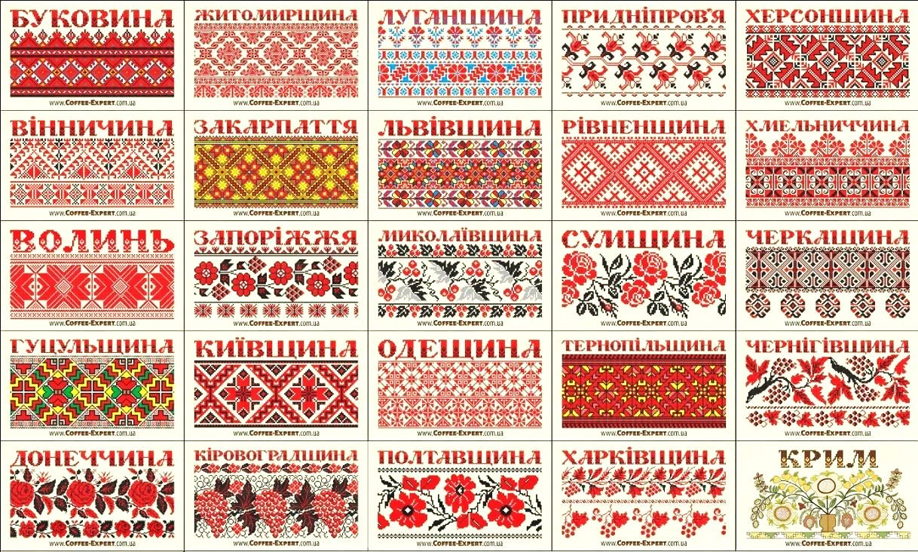
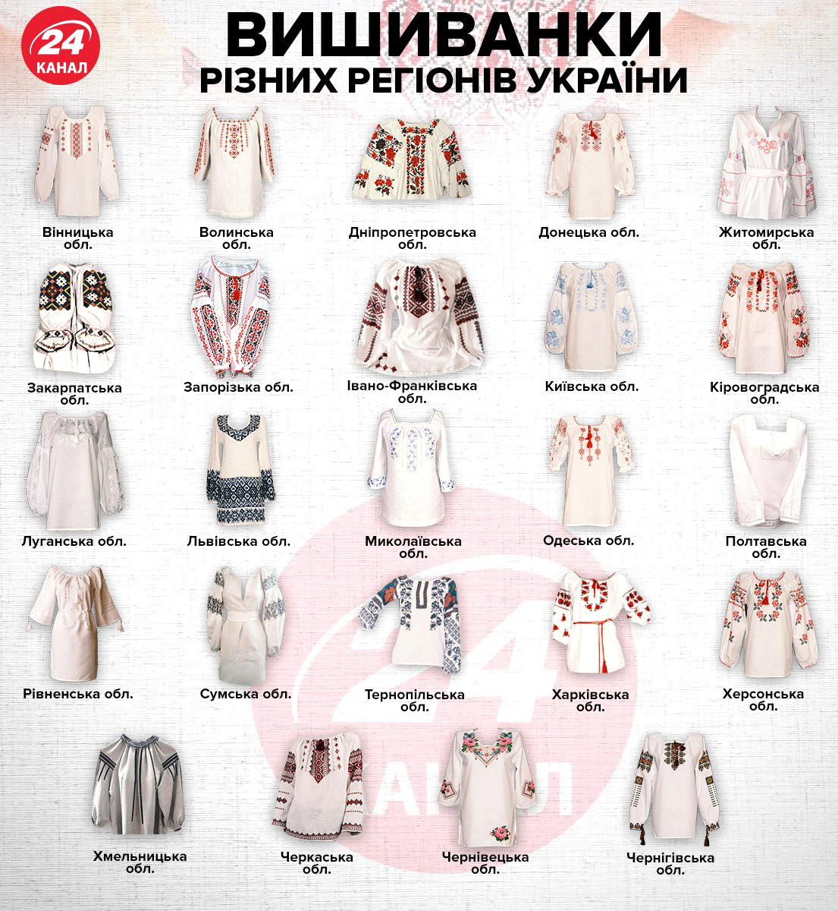

Різновиди вишивки, орнаменти та деталі
Наші предки вірили, що кожен елемент на полотні має конкретне значення. Знавці
переконують, що символізм
елементів вишиванки має дуже сильний вплив на життя того, хто її носить.
Геометричні візерунки символізують стихії природи та родючість землі, вони притаманні всім видам
народного мистецтва і всій слов`янській міфології. Різноманітні кружальця, трикутники, ромби, лінії, хрести
символічно відображали уявлення нашіх предків про світобудову, тож їхнє значення відповідне.
Рослинні та квіткові орнаменти здавна символізують сімейне щастя, материнську любов. В основі
рослинного орнаменту лежить культ поклоніння природі. Крім поширеного символу «дерево життя», у вишивках із
рослинним орнаментом популярні стилізовані зображення Берегині, використання таких мотивів як «виноград» –
символ добробуту, щасливого одруження; «барвінок» – символ кохання тощо.
Тваринні орнаменти майстрині зображували на полотні та вірили, що це приносить достаток і
довголіття. На зооморфних вишивках зображуються тотемічні тварини, а також звірі, що позначають три яруси
«дерева життя». Інколи вишивальниці використовують індивідуальні мотиви, які властиві баченню візерунка певної
особи. Ними можуть бути заячі та вовчі зуби, волове око, риб`яча луска тощо.
Та все ж кожен регіон України, а іноді навіть окреме село, має свою особливу вишивку, яка відрізняється від
інших технікою й орнаментом. У деяких краях це ремесло любили навіть чоловіки. Використовували різні техніки
вишивання: хрестик, мережки, гладь, набирування. На сьогодні відомо приблизно 250 видів вишивальних швів, що
базуються на 20 техніках.
Вишивка Полтавської області характеризується стриманістю тонів. Найвідоміша вишивка – білим по білому. Та
характерним для регіону є й блакитний, коричневий, сірий та червоний кольори ниток. Рослинний і геометричний
орнаменти в цьому регіоні об'єднуються. Улюблені рослинні мотиви – гілка або зламане дерево, хміль. Основні
геометричні мотиви – хрестик, ромб, трикутник, зірки. Жіночу полтавську вишиванку вирізняє багате, складне та
водночас ніжне, так зване «тонке» оздоблення рукавів.

Історія кольорів в українських вишиванках
Традиція вишивати кольорові орнаменти виникла ще в дохристиянські часи. Наші предки використовували
натуральні барвники, отримані з рослин, ягід і кори дерев.

- Червоний колір з’явився першим, адже його виготовляли з буряка та кори дуба.
- Чорний – з вугілля та дубового листя.
- Жовтий добували з ромашки чи цибулі.
- Синій барвник створювали з чорниці та плодів бузини.
У різних регіонах України орнаменти та палітра відрізнялися. Наприклад, у Центральній Україні переважали
теплі кольори, а в Західній – холодні.
Значення кольорів вишиванки: що символізує кожен колір
- Червоний колір: любов, сила та захист
- Білий колір: не лише чистота, а й зв’язок із предками
- Жовтий колір: сонячне золото і мудрість
- Синій колір: небеса, вода і вічність
- Чорний колір: не лише земля, а й таємниці космосу
- Зелений колір: життя, оновлення і надія